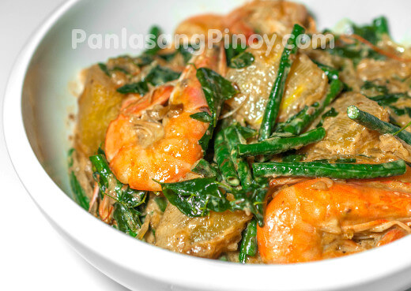

|  | Ginataang Hipon, Sitaw, at KalabasaGinataang Hipon, Sitaw, at Kalabasa is a delicious shrimp and vegetable dis that you should try. As the name connotes, ginataan refers to any dish cooked in coconut milk or coconut cream. This dish makes use of shrimps with shells and head on, string beans, squash, and malunggay leaves (moringa). |
Ingredients1 lb shrimp, cleaned 2 cups coconut milk 2 peices long green chili, sliced 2 peices long red chili or about 6 peices Thai chili, sliced 1 tablespoon ginger, minced 1 medium onion, chopped 3 teaspoon garlic, minced 1 1/2 tablespoons fish sauce 1/3 teaspoon ground black pepper 2 tablespoons cooking oil |
|
| <<< Back to Main Dish | |